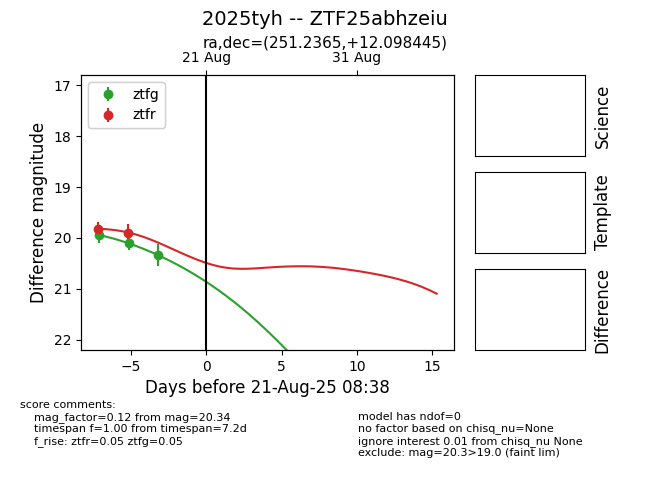

Target 2025tyh at 2025-08-21 09:16, see:
FINK: fink-portal.org/ZTF25abhzeiu
Lasair: lasair-ztf.lsst.ac.uk/objects/ZTF25abhzeiu
ALeRCE: alerce.online/object/ZTF25abhzeiu
TNS: wis-tns.org/object/2025tyh
YSE: ziggy.ucolick.org/yse/transient_detail/2025tyh
alt names
ZTF25abhzeiu (ztf,alerce)
2025tyh (tns,yse)
coordinates:
equatorial (ra, dec) = (251.2365,+12.09844)
galactic (l, b) = (29.6846,+33.49405)
photometry
last ztfg=20.34, ztfr=19.89
3 ztfg, 2 ztfr detections
